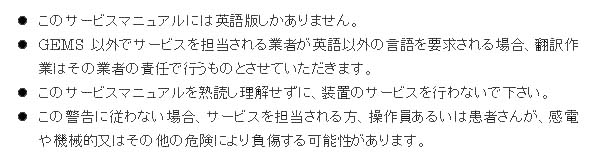
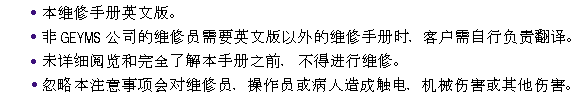

|
|
- This Service Manual is
available in English only.
- If a customer's service provider
requires a language other than English, it is the customer's
responsibility to provide translation services.
- Do not attempt to service
the equipment unless this service manual has been consulted
and is understood.
- Failure to heed this Warning
may result in injury to the service provider, operator or
patient from electric shock, mechanical or other hazards.
|
|
|
|
- Ce Manuel de maintenance
n'est disponible qu'en anglais.
- Si le technicien du client
a besoin de ce manuel dans une autre langue que l'anglais,
c'est au client qu'il incombe de le faire traduire.
- Ne pas tenter d'intervention
sur les équipements tant que le manuel Service n'a
pas été consulté et compris.
- Le non-respect de cet avertissement
peut entrainer chez le technicien, l'opérateur ou le
patient des blessures dues à des dangers électriques,
mécaniques ou autres.
|
|
|
|
- Dieses Kundendienst-Handbuch existiert
nur in englischer Sprache.
- Falls ein fremder Kundendienst eine andere
Sprache benótigt, ist es Aufgabe des Kunden für
eine entsprechende Übersetzung zu sorgen.
- Versuchen Sie nicht, das Gerät zu
reparieren, bevor dieses Kundendienst-Handbuch nicht zu Rate
gezogen und verstanden wurde.
- Wird diese Warnung nicht beachtet, so
kann es zu Verletzungen des Kundendiensttechnikers, des Bedieners
oder des Patienten durch elektrische Schläge, mechanische
oder sonstige Gefahren kommen.
|
|
|
|
- Este Manual de Servicio sólo existe
en inglés.
- Si algun proveedor de servicios ajeno
a GEMS solicita un idioma que no sea el inglés, es
responsabilidad del cliente ofrecer un servicio de traducción.
- No se deberá dar servicio técnico
al equipo, sin haber consultado y comprendido este manual
de servicio.
- La no observancia del presente aviso
puede dar lugar a que el proveedor de servicios, el operador
o el paciente sufran lesiones provocadas por causas eléctricas,
mecánicas o de otra naturaleza.
|
|
|
|
- Este
Manual de Assistência Técnica só se encontra
disponível em Inglês.
- Se qualquer outro serviço de assistência
técnica, que não a GEMS, solicitar estes manuais
noutro idioma, é
da responsabilidade do cliente fornecer os serviços
de tradução.
- Não tente reparar o equipamento
sem ter consultado e compreendido este Manual de Assistência
Técnica.
- O não cumprimento deste aviso
pode por em perigo a segurança do técnico, operador
ou paciente devido a choques elétricos, mecânicos
ou outros.
|
|
|
|
- Il
presente manuale di manutenzione e disponibile soltanto in
inglese.
- Se un addetto alla manutenzione esterno alla GEMS richiede
il manuale in una lingua diversa, il cliente é tenuto
a provvedere direttamente alla traduzione.
- Si proceda alla manutenzione dell'apparecchiatura solo dopo
aver consultato il presente manuale ed averne compreso il
contenuto.
- Non tenere conto della presente avvertenza potrebbe far
compiere operazioni da cui derivino lesioni all'addetto alla
manutenzione, all'utilizzatore ed al paziente per folgorazione
elettrica, per urti meccanici od altri rischi.
|
|
|
|
 |
|
|
|
 |
|
|

|
|